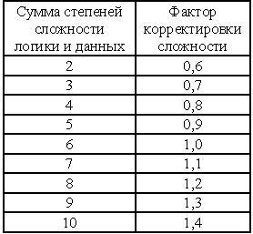
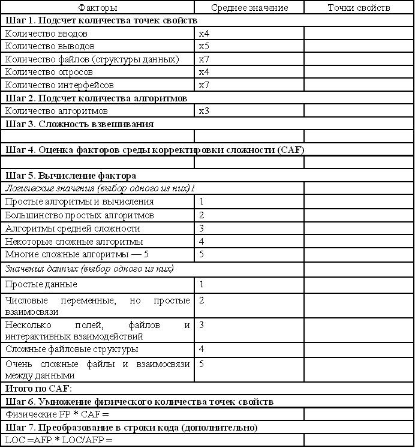
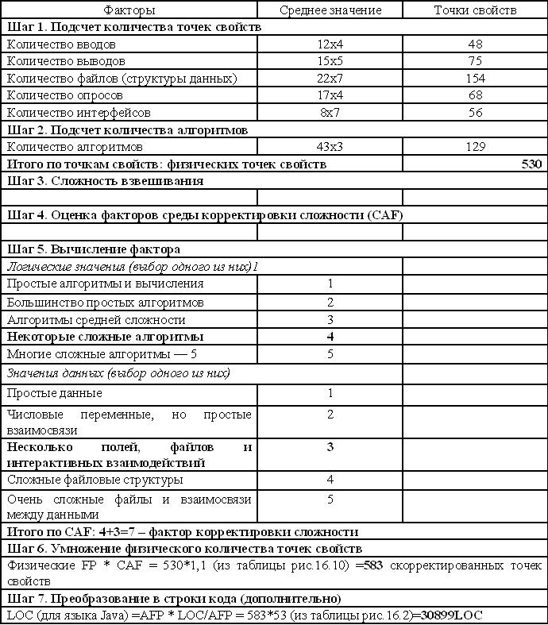

Метод точек свойств
Метод точек свойств представляет собой расширение метода функциональных точек, применяемого для измерений в приложениях различного типа, даже таких, как встроенные системы и/или системы реального времени. В 1986 году компания Software Productivity Research адаптировала метод анализа точек свойств в отношении системного ПО. Чистые подсчеты по методу функциональных точек, выполненные по отношению к ПО, которое не принадлежит классу MIS, могут давать неправильные результаты.
Это связано с тем, что приложения, как правило, неоднородны и могут иметь большую степень алгоритмической сложности, но при этом обладать простыми внешними вводами/выводами.
Точка свойства представляет собой новую категорию функции, которая может представлять сложные алгоритмы и управление (вызов / отклик).
Сложность алгоритма определяется в терминах количества "правил", необходимых для выражения алгоритма.
Точки свойств обычно применяются в следующих случаях:
- ПО, функционирующее в режиме реального времени;
- системное ПО (например, операционные системы и компиляторы);
- встроенное ПО, например, пакеты навигационных радаров или микропроцессоры автомобильных подушек безопасности;
- инженерные приложения, например, системы автоматизированного проектирования (САПР), автоматизированного производства (АЛ), а также математическое ПО;
- системы искусственного интеллекта (ИИ);
- ПО, предназначенное для поддержки телекоммуникаций (например, системы поддержки телефонных коммуникаций);
- ПО, выполняющее функции контроля над процессами (например, управление автоматизированными нефтеперегонными заводами). Точки свойств, по сути, являются функциональными точками, но в отличие от последних они лучше адаптированы к высокой сложности алгоритмов. В данном случае под алгоритмом подразумевается связанный набор правил (выполняемых операторов), требуемых для решения вычислительных проблем.
Инструкции по подсчету с помощью точек свойств
Шаг 1. Подсчет с помощью точек свойств
Этот шаг аналогичен шагу, выполняемому при подсчете функциональных точек, - учитываются вводы, выводы, файлы (структуры данных), опросы и интерфейсы.
Шаг 2. Продолжение подсчета с помощью точек свойств путем учета количества алгоритмов.
Любой алгоритм представляет собой связанную вычислительную проблему, которая включена в состав конкретной программы.
Значимые и исчисляемые алгоритмы могут разрешать определенные и в принципе решаемые связанные проблемы, для которых существует одна точка входа и одна точка выхода.
Разработчики, которые на этапе разработки проекта часто имеют дело со схемами информационных потоков либо со структурными диаграммами, сравнивают алгоритмы со спецификациями базового процесса либо модуля.
Шаг 3. Сложность взвешивания.
Используйте "средние" веса вместо простых, средних либо сложных (обратите внимание, что понятие "средний" для точек свойств отличается от "среднего" в случае с функциональными точками) для вводов, выводов, файлов (структур данных), опросов и интерфейсов. При взвешивании алгоритмов применяются простые, средние и сложные множители.
Средний фактор сложности для "файлов" уменьшается с 10 до 7, что отражает уменьшение значимости логических файлов по сравнению с ПО, предназначенным для выполнения интенсивных вычислений.
По умолчанию весовой множитель для алгоритмов равен 3. Это значение может варьироваться в диапазоне от 1 до 10. Алгоритмам, использующим базовые арифметические операции и некоторые правила принятия решений, присваивается значение 1. Алгоритмам, в состав которых включены сложные уравнения, матричные операции и сложная логическая обработка, назначается значение 10. Значимые алгоритмы, которые должны быть исчисляемыми, имеют следующие характеристики:
- представлять решаемую, связанную и определенную проблему;
- обладать свойством конечности;
- быть точным и однозначным;
- иметь ввод или начальное значение;
- иметь вывод или продуцировать результат;
- являться реализуемым - каждый шаг может выполняться на компьютере;
- обеспечивать возможность представления с помощью одной из стандартных программных конструкций: последовательность, конструкция if-then-else, do- case, do-while и do-until.
Шаг 4. Оценка факторов среды
Вместо 14 факторов среды (как в случае с анализом функциональных точек), в данном случае используются лишь два фактора: сложность логики и сложность данных.
Диапазон значений варьируется от 1 до 5.
Логические значения
1. простые алгоритмы и вычисления;
2. большинство простых алгоритмов;
3. алгоритмы средней сложности;
4. некоторые сложные алгоритмы;
5. многие сложные алгоритмы.
Значения данных
1. простые данные;
2. числовые переменные, но простые взаимосвязи;
3. несколько полей, файлов и интерактивных взаимодействий;
4. сложные файловые структуры;
5. очень сложные файлы и взаимосвязи между данными.
При суммировании факторов сложности логики и данных получаем значения, находящиеся в диапазоне от 2 до 10.
Шаг 5. Вычисление фактора корректировки сложности.
Воспользуйтесь таблицей рис. 16.10 для вычисления фактора корректировки сложности.

Рисунок 16.10 - Фактор корректировки сложности метода точек свойств
Шаг 6. Результат умножения физического количества точек свойств на фактор корректировки сложности.
Шаг 7. Преобразование в количество строк кода с помощью таблицы преобразования функциональных точек (дополнительно).
Бланк рабочего листа (таблица на рис.16.11), применяемый при методе точек свойств, служит примером, иллюстрирующим каждый из 7 упомянутых шагов.
Заполненный рабочий лист представлен в таблице на рисунке 16.12.

Рисунок 16.11 - Бланк рабочего листа анализа методом точек свойств

Рисунок 16.12 - Пример рабочего листа анализа методом точек свойств
Преимущества анализа методом точек свойств.
Анализ точек свойств обеспечивает те же самые преимущества, что и анализ функциональных свойств. Причем при этом обеспечивается улучшенный подход к использованию оценки размера алгоритмически насыщенных систем.
Недостатки анализа методом точек свойств
Основным недостатком анализа точек свойств является субъективный подход к классификации алгоритмической сложности.